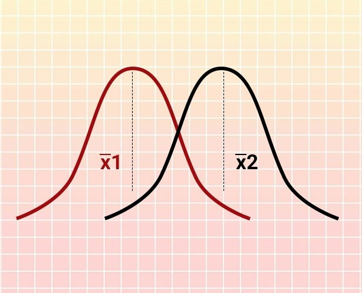
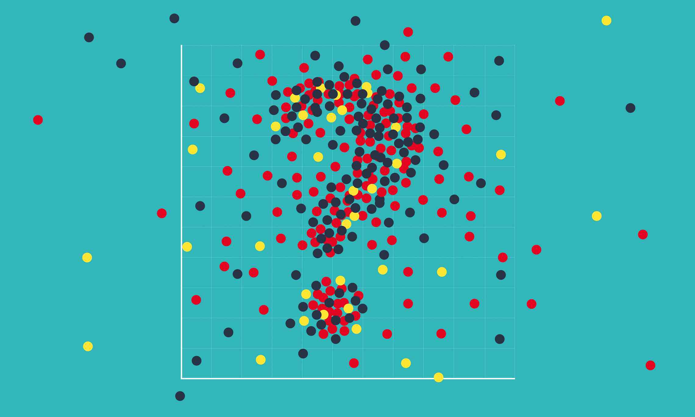

Introduction to Statistics
Abdullah Al Mahmud
Statistics: What & How

Topics
- What is statistics?
- How Statistics works?
- Probability and Statistics
- Application of Statistics
- Example Problem
What is statistics?
Three Meanings
- Plural of statistic
- Table of data
- Methodology
How Statistics works?
Takes a sample from a population.

There are many sampling techniques.
Probability and Statistics
Application of Statistics

Examples
- Identification of unwanted spam messages in e-mail
- Segmentation of customer behavior for targeted advertising
- Forecasts of weather behavior and long-term climate changes
- Prediction of popular election outcomes
- Development of algorithms for auto-piloting drones and self-driving cars
- Optimization of energy use in homes and office buildings
- Projection of areas where criminal activity is most likely
- Discovery of genetic sequences linked to diseases
End of This Segment
THANK YOU!
Chapter 01: Basic Concepts
Chapter Overview
- Definition
- Population and sample
- Variable and its types
- Scale of measurement
- Use of summation sign
- Main Discussion
Definition
Coxton and Crowden
Statistics may be defined as the science of collection, presentation, analysis and interpretation of numerical data.
Mechanism
- Data Collection
- Organization
- Analysis
- Interpretation
- Presentation
Population and Sample
Population: A set of similar items or events which is of interest Sample: Any subset of population
- Finite
- Infinite
Variable and Constant
- Variable
- Random Variable
- Constant
Examples
- Income of a regular employee
- Income of a freelancer
- Any unchanging number, e.g, \(\pi\)
- Result of a die throw
- Father’s name
- Mark of a subject
- GPA of a student
Types of Variable
- Qualitative
- Quantitative
- Discrete: Limited and pre-specified
- Continuous: Can take on any values between any two given number
Univariate, Multivariate
Scale of Measurement
Describes nature of information within the values.
- Nominal: Name of Insignificant number, e.g., color, Street no.,
- Ordinal: Order matters, e.g., rating
- Interval: Zero may not be zero, like temperature
- Ratio: Zero is 0; most variables fall in this category
Examples
- Gender
- Religion
- Temperature
- Income group (Lower class, Low, Middle, High)
- Income
- Distance of stars
- Radius of screws
- Diameter of trees
- Room no.
Another Example
Match as per suitable scale
| Movie Rating | Scale |
|---|---|
| Poor, bad, good, excellent | ratio |
| In a scale of -10 to 10: -10, -2, 0, 5, 10 | interval |
| Awesome, Amazing, Mind-blowing, Stunning | nominal |
| In a scale of 0 to 10: 0, 5, 8, 10 | ordinal |
Operation with scales

Shifting origin and scale
Say we have values, \(x_1, x_2, \cdot \cdot \cdot , x_n\)
- Origin shift: Adding/Subtracting
- \(y_1 = x_1-a \space or \space x_1+a\)
- Scale shift: Multiplying/Division
- \(y_1 = b \cdot x_1 \space or \space x_1/b\)
- both: \(y_i = \frac{x_i-a}{b}\)
Use of Summation sign
\[x_1 + x_2 + x_3 + x_4 = \sum_{i=1}^4 x_i\]
\[x_1 + x_2 + ... x_n = \sum_{i=1}^n x_i\]
\[x_1 + x_2 + ... x_{10} = ?\]
Theorem 01
\[\sum_{i=1}^n bx_i=b \sum_{i=1}^n x_i\]
Theorem 02
\[\sum_{i=1}^n (ax_i-b)=a \sum_{i=1}^n x_i-nb\]
Quick tips
- \(\sum_{i=1}^n a = na\)
- Can you prove it?
Theorem 03
\[\sum_{i=1}^n (ax_i^2-bx_i+c)=a\sum_{i=1}^n x_i^2-b\sum_{i=1}^n x_i + nc\]
Theorem 04
\[\sum_{i=1}^n (ax_i-by_i)=a\sum_{i=1}^n x_i - b \sum_{i=1}^n y_i\]
Theorem 05
\[\sum_{i=1}^n (ax_i-b)^2=a^2 \sum_{i=1}^n x_i^2 - 2ab \sum_{i=1}^n x_i + nb^2\]
Theorem 06
\[(\sum_{i=1}^n x_i)^2=\sum_{i=1}^n x_i^2 + \sum_{i \ne j}^n\sum x_ix_j\]
Quick Tip
\[\prod_{i=1}^k x_i = x_1 \times x_2 \times \cdot \cdot \cdot \times x_n\]
Theorem 07
\[\prod_{i=1}^k x_iy_i = (\prod_{i=1}^k x_i)(\prod_{i=1}^k y_i)\]
Theorem 08
\(\displaystyle \sum_{i=1}^m \sum_{j=1}^n (x_i+y_j)=n\sum_{i=1}^m x_i + m \sum_{i=1}^n y_j\)
- \(\displaystyle \sum_{i=1}^m (x_i+y_1+x_i+y_2+\cdots+x_i+y_n)\)
- \(\displaystyle \sum_{i=1}^m \{(x_i+x_i+\cdots \text{up to n})+(y_1+y_2+\cdots+y_n)\)
- \(\displaystyle \sum_{i=1}^m(nx_i+\sum_{j=1}^ny_j)\)
- \(\displaystyle (nx_1+\sum_{j=1}^ny_j+nx_2+ \sum_{j=1}^ny_j)+\cdots+nx_m+\sum_{j=1}^ny_j))\)
- \(\displaystyle n\sum_{i=1}^m x_i+m\sum_{j=1}^ny_j\)
Theorem: \(\Sigma x_iy_j\)
\(\displaystyle \sum_{i=1}^m \sum_{i=1}^n x_iy_j=(\sum_{i=1}^n x_i) (\sum_{i=1}^n y_j)\)
- \(\displaystyle \sum_{i=1}^m (x_iy_1+x_iy_2+\cdots+x_iy_n)\)
- \(\displaystyle \sum_{i=1}^m x_i(y_1+y_2+\cdots+y_n)\)
- \(\displaystyle \sum_{i=1}^m x_i \sum_{i=1}^n y_i\)
Example
Given
\(f_1=2, f_2 = 4, f_3 = 6\)
\(x_1 = -3, x_2 =7, x_3 = 4\)
Find the values of
- \(\sum f_ix_i\)
- \(\sum f_ix_i^2\)
- \(\sum f_i(x_i-5)^2\)
Textbook Exercise -01
- Find the value of \(\sum_{i=1}^{10} (x_i-4)\)
where \(\sum_{i=1}^{10} x_i = 20\)
Exercise-01
- Discrete vs continuous variable
- Prove \[\sum_{i=1}^k abx_i = ab \sum_{i=1}^k x_i\]
Exercise - 02
Prove \[\prod_{i=1}^n c =c^n\]
Exercise - 03
- Find the value of \[\sum_{i=1}^{10} (x_i-4)\] where \[\sum_{i=1}^{10}=20\]
Creative Question
Given below are the daily income and expense of ten workers.
| Income (x) | 120 | 130 |
|---|---|---|
| Expense (y) | 80 | 120 |
From above data, prove
- \[\sum_{i=1}^{2}x_iy_i
\ne (\sum_{i=1}^{2}x_i)(\sum_{i=1}^{2}y_j)\]
- \[\sum_{i=1}^{2}
\sum_{j=1}^{2}x_iy_j=(\sum_{i=1}^{2}x_i)(\sum_{j=1}^{2}y_j)\]
- \[\sum_{i=1}^{2} \sum_{j=1}^{2}(x_i-y_j)=2 \times \sum_{i=1}^{2}x_i- 2 \times \sum_{j=1}^{2}y_j\]
Creative Question -07
Given below are the daily income and expense of ten workers.
| Income (x) | 120 | 130 | 88 | 150 | 175 | 144 | 180 | 200 | 160 | 155 |
|---|---|---|---|---|---|---|---|---|---|---|
| Expense (y) | 80 | 120 | 70 | 100 | 160 | 114 | 170 | 195 | 140 | 131 |
- What do you mean by bivariate data?
- From above data, prove
\[\sum_{i=1}^{10} \sum_{j=1}^{10}x_iy_j=(\sum_{i=1}^{10}x_i)(\sum_{j=1}^{10}y_j)\] c. \[\sum_{i=1}^{10} \sum_{j=1}^{10}(x_i-y_j)=10 \times \sum_{i=1}^{10}x_i- 10 \times \sum_{j=1}^{10}y_j\] d. Prove \[\sum_{i=1}^{10}x_iy_i \ne (\sum_{i=1}^{10}x_i)(\sum_{i=1}^{10}y_j)\]